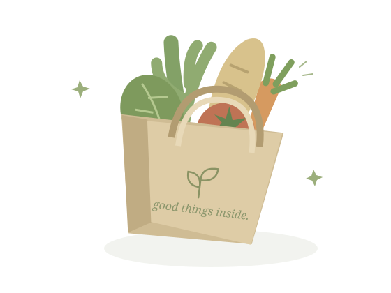

A FRESH WAY TO FIGURE OUT DINNERLess thinking.
Less thinking.
More good food.
A few recipes you love. One thoughtful grocery list.
Make a little room for the rest of your week.
A little planning. A lot less “what's for dinner?”

FRESH IDEAS.LESS FUSS.
A working browser demo. Original sample recipes, local rules instead of AI, memory-only plans. No account or real grocery orders.
YOUR NEXT GOOD MEALS
Three good places to start.
Older and never-planned recipes first, with a little ingredient variety.
All your recipes are in the current plan. Remove one, or add a new recipe below.
Thoughtful rules, not an AI recommendation. Quantities are per recipe, without scaling.
YOUR OWN LITTLE COLLECTION
Good meals, worth keeping.
Search, tweak, and make the collection your own.
No recipes match. Try another ingredient or clear the search.
A good week starts with a little fresh thinking.
Keep the recipes. Skip the guesswork. Bring something good to the table.